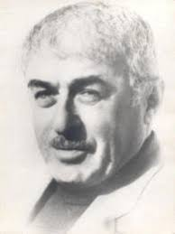
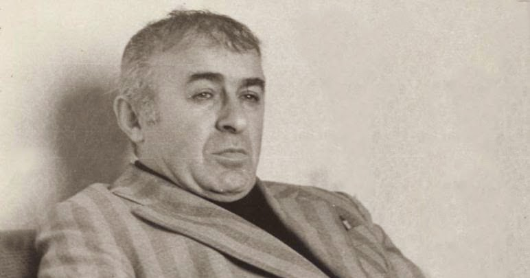

რევაზ ინანიშვილი დაიბადა 1926 წელს 20 დეკემბერს, საგარეჯოს რაიონის სოფელ ხაშმში, მოსამსახურის ოჯახში. ხუთი კლასი დაამთავრა მშობლიურ სოფელში. 1937 წელს ოჯახთან ერთად გადავიდა საცხოვრებლად თბილისში. საშუალო სკოლის დამთავრების შემდეგ, ომის წლებში, 1943_45_ში მუშაობდა 31-ე ქარხანაში. აქედან გადავიდა სასწავლებლად საავიაციო ტექნიკუმში. ეს სასწავლებელი არ დაუმთავრებია.
.jpg)
.jpg)
1947წ. წელს შევიდა თბილისის სახელმწიფო უნივერსიტეტში ფილოლოგიის ფაკულტეტზე 1949 წელს უნივერსიტეტი მიატოვა დის ოჯახის სიდუხჭირი გამო, იმავე წელს მუშაობა დაიწყო სამგორის არხის მშენებლობაზე. 1951 წელს დაბრუნდა უნივერსიტეტში და დაამთავრა 1956 წელს. 1952 წელს დაოჯახდა და ოთხი წელი ცხოვრობდა ლიტერატურული შრომით. 1960 წელს მუშაობა დაიწყო საბავშვო გამომცემლობა “ნაკადულში”.

1966 წელს გადავიდა კინოსტუდია “ქართულ ფილმში” სასცენარო განყოფილებაში, 1985-1988 წლებში მუშაობდა მწერალთა კავშირის მდივნად. 1989 წლიდან სიცოცხლის ბოლომდე (1991) მუშაობდა ჟურნალ “დილის” რედაქტორად. პირველი მოთხრობა დაიბეჭდა 1950 წელს. პირველი წიგნი გამოვიდა 1953 წელს. 1977 წელს წიგნისათვის “შორი თეთრი მწვერვალი” მიენიჭა რუსთაველის სახეობის პრემია. 1980 წელს კინოფილმმა – “ქვიშანი დარჩებიან” სცენარისთვის, მინისტრთა საბჭოს პრემია “ხუთწლედის მატიანე” მიენიჭა.
გამოცემული აქვს მრავალი წიგნი. მისი სცენარების მიხედვით, გადაღებულია ფილმები: “ნატვრის ხე” ლეონიძის მოთხრობის მოხედვით, “ქვიშანი დაერჩებიან”, “არდადეგები”, “დედუნა” “ჩირიკი და ჩიკოტელა” “კაცები”… მისი ნოველები თარგმნილია რუსულ, უკრაინულ, გერმანულ, ბულგარულ, სომხურ… ენებზე. გარდაიცვალა 1991 წელს 26 დეკემბერს, დაკრძალულია დიდუბის პანთეონში.
.jpg)